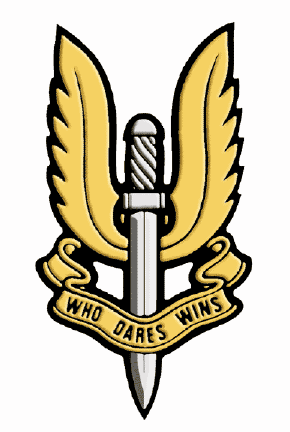

El Especial Air Servicie se creó durante la Segunda Guerra Mundial para realizar misiones de sabotaje en territorio enemigo. Con el tiempo se ha convertido en un referente para cualquier comando de operaciones especiales
En 1946, el Tactical Investigation Committee de la War Office, observando la posibilidad de utilizar fuerzas de operaciones especiales para una futura guerra en Europa decidió, contra la opinión
de muchos veteranos del Ejército Regular, crear una unidad militar en el Territorial Army que realizará estas tareas.
Al principio no sabían si mantener el nombre que llevaban desde sus inicios o si sería conveniente cambiarlo, pero finalmente se estableció el nombre de 21 SAS Regiment.
El caso es que, como el SAS había sido disuelto al acabar la guerra, tuvieron que pedir la ayuda de los veteranos, que vendrían como voluntarios, y conseguir hombres de otro lado.
Aquí es cuando entra en escena un grupo de antiguos voluntarios de guerra, que no habían formado parte del SAS, sino de un cuerpo de voluntarios llamado
The Artists' Rifles. La mayoría de su personal fue a integrarse en las filas del Regimiento 21 del SAS, junto con veteranos del antiguo SAS, que aportaron conocimient
o y tradiciones a los recién incorporados

INGRESO AL SAS
Al ingresar al curso te hacen firmar una hoja, la cual
dice que ni la organización ni el gobierno se hace responsable de las
decisiones de la persona ya que esta puede perder la vida durante el entrenamiento
Durante todo el año se realizan solo dos procesos de selección en las cuales solo se alistan unos
200 aspirantes, esta se realiza durante siente meses y se divide en tres etapas.